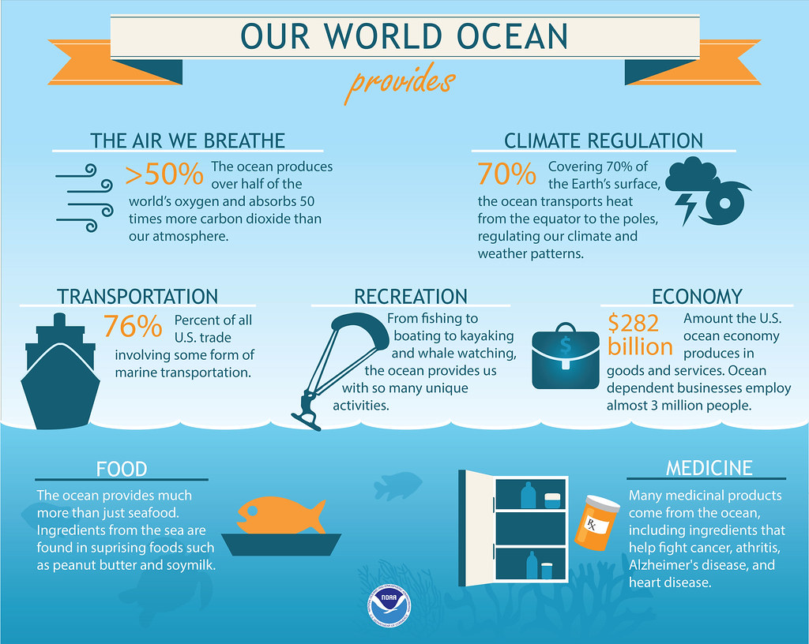

One of the most effective ways to combat water pollution is through the implementation and enforcement of strong environmental regulations. These regulations should aim to reduce the discharge of pollutants from industrial and agricultural sources, as well as improve wastewater treatment facilities to ensure that contaminants are removed before being released into water bodies.
In addition, regulations should also address the proper disposal of hazardous materials to prevent them from leaching into groundwater or being washed into waterways during rain events. Another important approach to combating water pollution is through the promotion of sustainable agricultural practices.